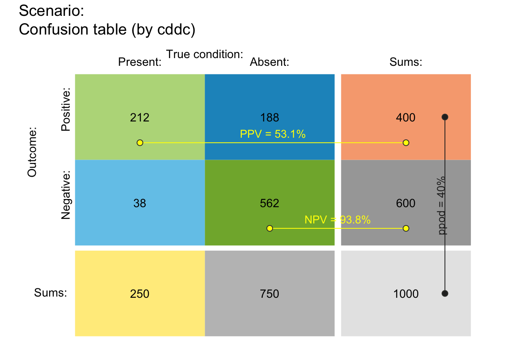
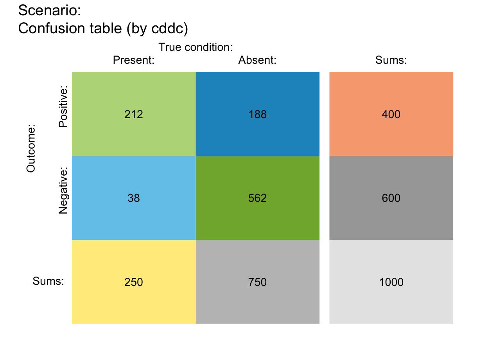
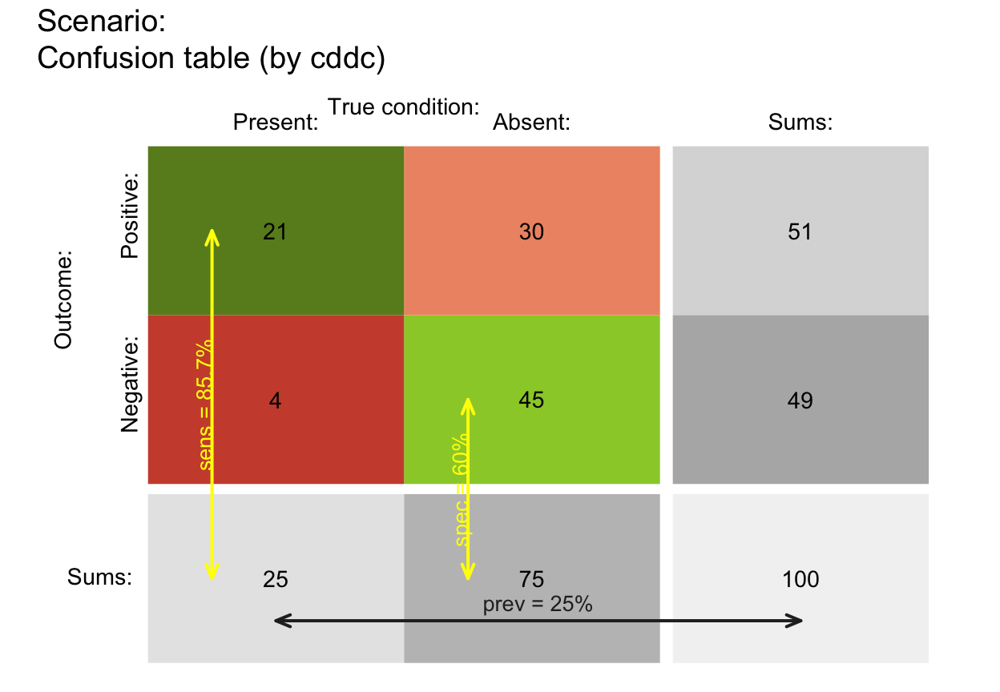
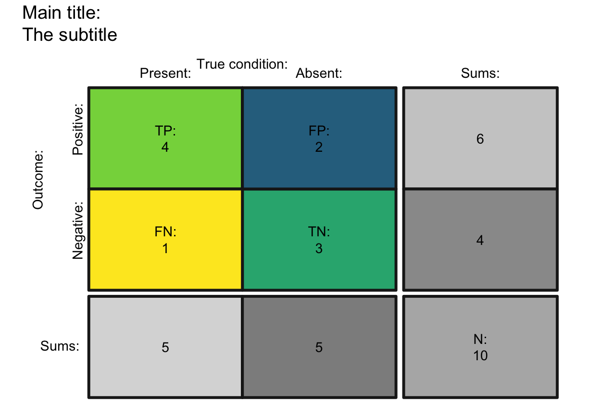
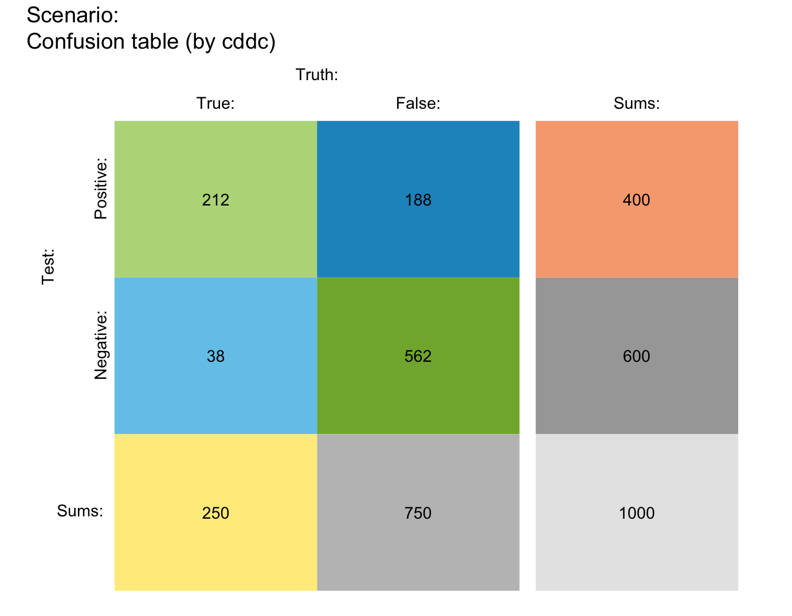
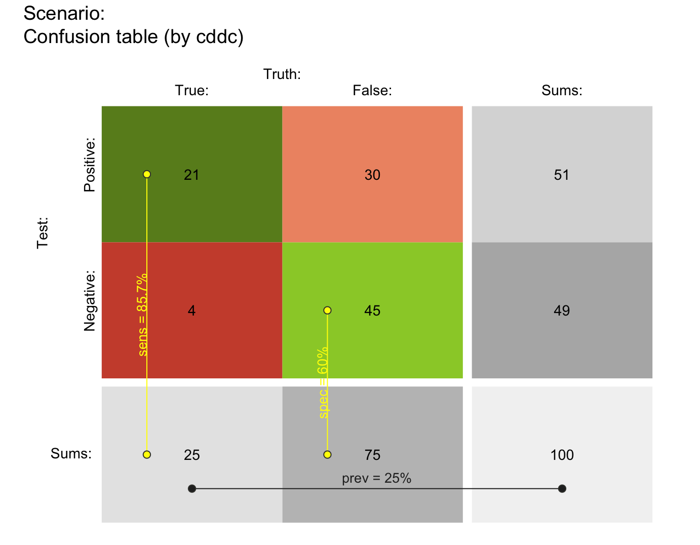
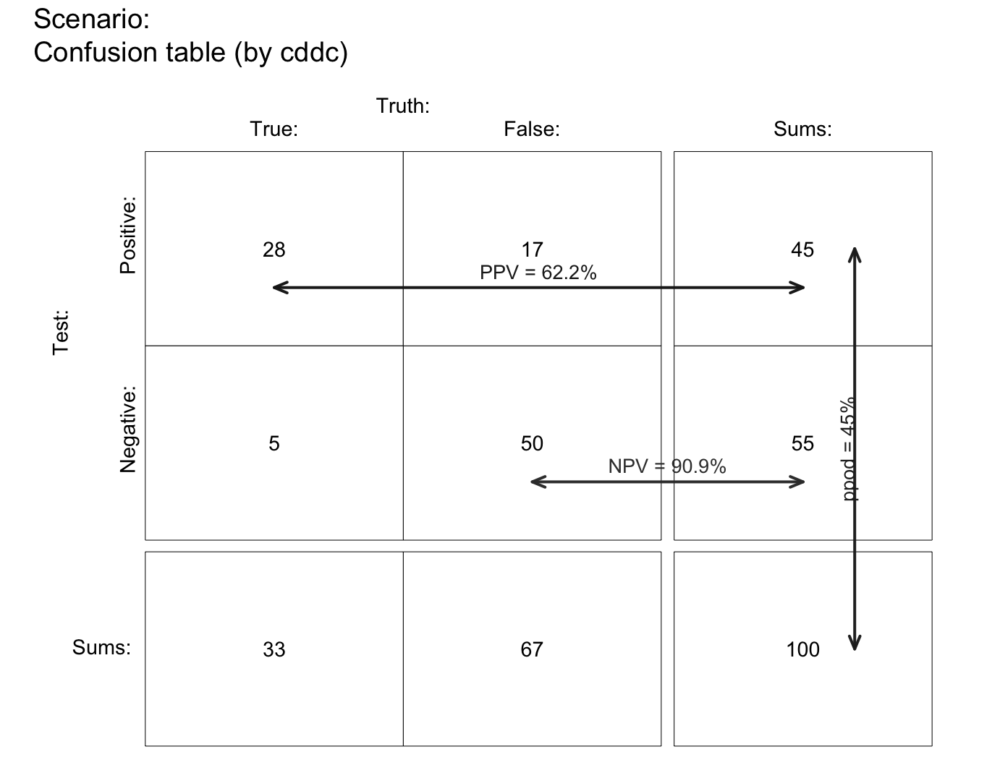
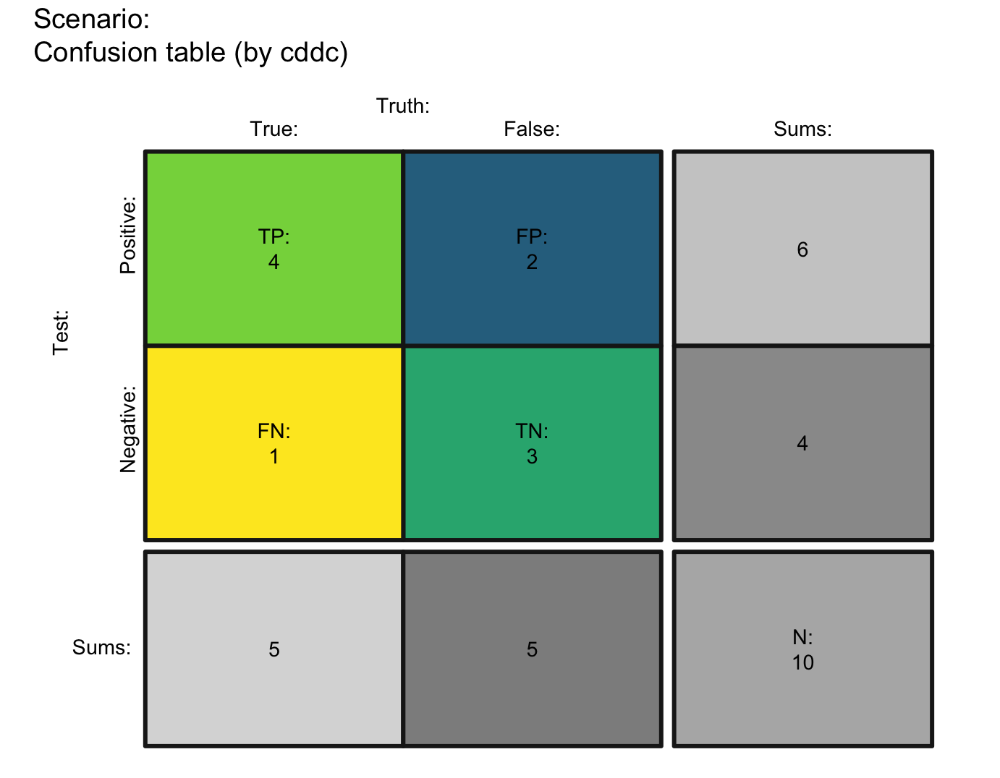
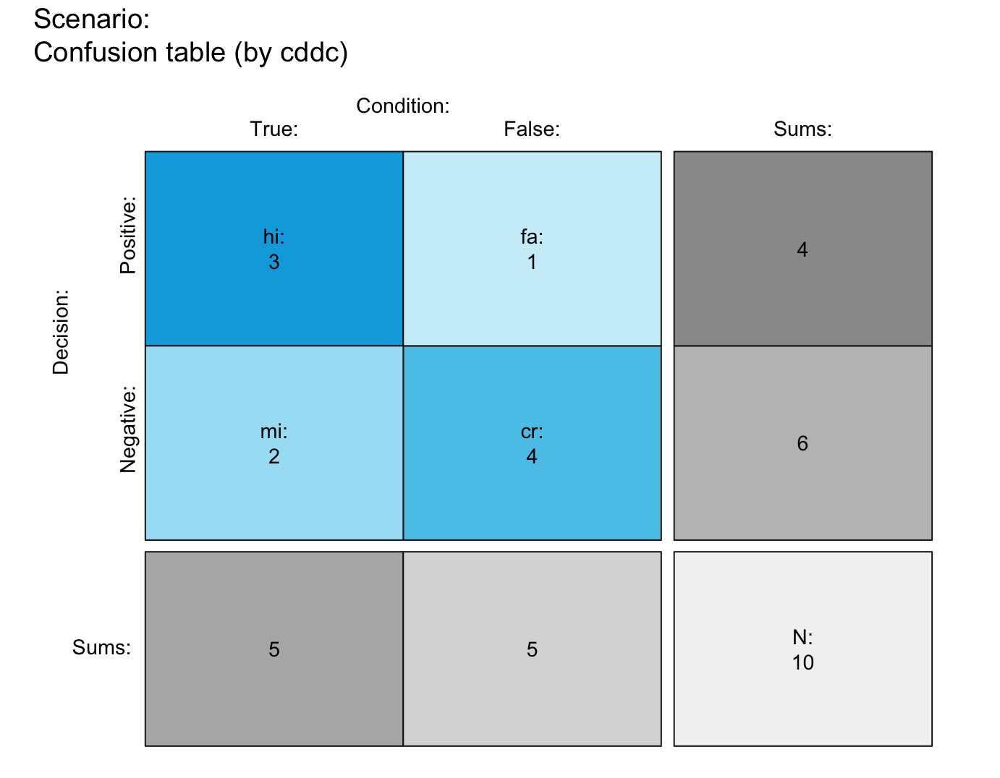
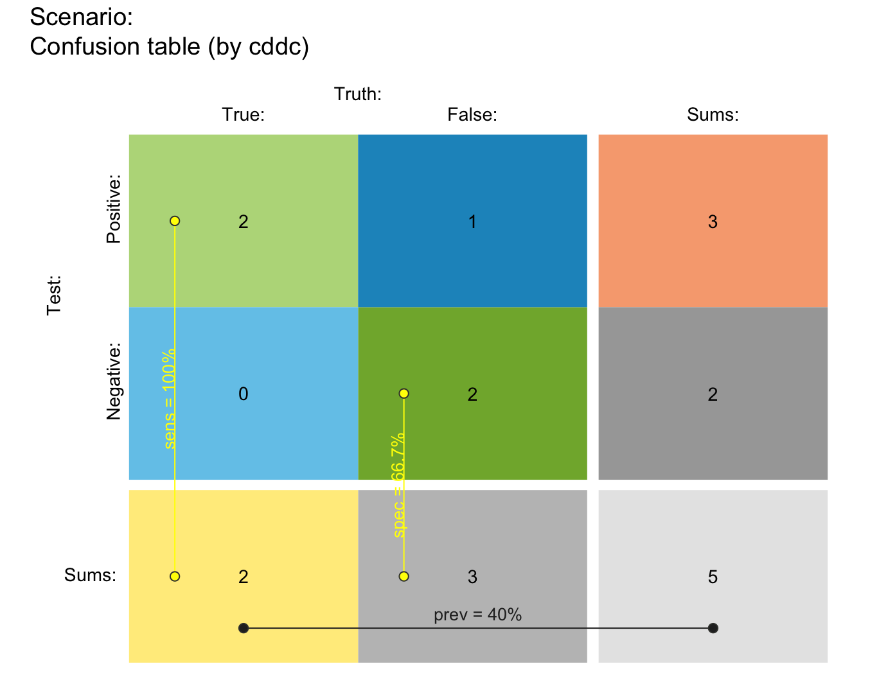

plot_tab plots a 2 x 2 contingency table
(aka. confusion table) of
4 classification cases (hi, mi,
fa, cr)
and corresponding row and column sums.
plot_tab(prev = num$prev, sens = num$sens, mirt = NA, spec = num$spec, fart = NA, N = num$N, by = "cddc", p_split = "v", area = "no", scale = "p", round = TRUE, f_lbl = "num", f_lbl_sep = NA, f_lbl_sum = f_lbl, f_lbl_hd = "nam", f_lwd = 0, gaps = c(NA, NA), brd_w = 0.1, p_lbl = NA, arr_c = -3, col_p = c(grey(0.15, 0.99), "yellow", "yellow"), brd_dis = 0.3, lbl_txt = txt, title_lbl = txt$scen_lbl, cex_lbl = 0.9, cex_p_lbl = NA, col_pal = pal, mar_notes = TRUE, ...)
Arguments
| prev | The condition's prevalence |
|---|---|
| sens | The decision's sensitivity |
| mirt | The decision's miss rate |
| spec | The decision's specificity value |
| fart | The decision's false alarm rate |
| N | The number of individuals in the population.
A suitable value of |
| by | A character code specifying 2 perspectives that split the population into subsets, with 6 options:
|
| p_split | Primary perspective for population split, with 2 options:
Note: In contrast to |
| area | A character code specifying the shape of the main area, with 4 options:
|
| scale | Scale probabilities (but not table cell dimensions) either by exact probability or by (rounded or non-rounded) frequency, with 2 options:
Note: |
| round | A Boolean option specifying whether computed frequencies
are rounded to integers. Default: |
| f_lbl | Type of label for showing frequency values in 4 main areas, with 6 options:
|
| f_lbl_sep | Label separator for main frequencies
(used for |
| f_lbl_sum | Type of label for showing frequency values in summary cells,
with same 6 options as |
| f_lbl_hd | Type of label for showing frequency values in header,
with same 6 options as |
| f_lwd | Line width of areas.
Default: |
| gaps | Size of gaps (as binary numeric vector) specifying
the widths of vertical and horizontal gaps between 2 x 2 table
and sums (in bottom row and right column).
Default: |
| brd_w | Border width for showing 2 perspective summaries
on top and left borders of main area (as a proportion of area size)
in a range |
| p_lbl | Type of label for showing 3 key probability links and values, with 7 options:
|
| arr_c | Arrow code for symbols at ends of probability links
(as a numeric value
Default: |
| col_p | Colors of probability links (as vector of 3 colors).
Default: |
| brd_dis | Distance of probability links from cell center
(as a constant).
Default: |
| lbl_txt | Default label set for text elements.
Default: |
| title_lbl | Text label for current plot title.
Default: |
| cex_lbl | Scaling factor for text labels (frequencies and headers).
Default: |
| cex_p_lbl | Scaling factor for text labels (probabilities).
Default: |
| col_pal | Color palette.
Default: |
| mar_notes | Boolean option for showing margin notes.
Default: |
| ... | Other (graphical) parameters. |
Value
Nothing (NULL).
Details
plot_tab computes its frequencies freq
from a sufficient and valid set of 3 essential probabilities
(prev, and
sens or its complement mirt, and
spec or its complement fart)
or existing frequency information freq
and a population size of N individuals.
plot_tab is derived from plot_area,
but does not scale the dimensions of table cells.
See also
plot_area for plotting mosaic plot (scaling area dimensions);
pal contains current color settings;
txt contains current text settings.
Other visualization functions: plot.riskyr,
plot_area, plot_bar,
plot_curve, plot_fnet,
plot_icons, plot_mosaic,
plot_plane, plot_prism,
plot_tree
Examples
## Basics: # (1) Plotting global freq and prob values: plot_tab()plot_tab(area = "sq", f_lwd = 3, col_pal = pal_rgb)plot_tab(f_lbl = "namnum", f_lbl_sep = " = ", brd_w = .10, f_lwd = .5)# (2) Computing local freq and prob values: plot_tab(prev = .5, sens = 4/5, spec = 3/5, N = 10, f_lwd = 1)## Plot versions: # by x p_split [yields (3 x 2) x 2] = 12 versions]: plot_tab(by = "cddc", p_split = "v", p_lbl = "def") # v01 (see v07)plot_tab(by = "cdac", p_split = "v", p_lbl = "def") # v02 (see v11)plot_tab(by = "cddc", p_split = "h", p_lbl = "def") # v03 (see v05)plot_tab(by = "cdac", p_split = "h", p_lbl = "def") # v04 (see v09)plot_tab(by = "dccd", p_split = "v", p_lbl = "def") # v05 (is v03 rotated)plot_tab(by = "dcac", p_split = "v", p_lbl = "def") # v06 (see v12)plot_tab(by = "dccd", p_split = "h", p_lbl = "def") # v07 (is v01 rotated)plot_tab(by = "dcac", p_split = "h", p_lbl = "def") # v08 (see v10)plot_tab(by = "accd", p_split = "v", p_lbl = "def") # v09 (is v04 rotated)plot_tab(by = "acdc", p_split = "v", p_lbl = "def") # v10 (is v08 rotated)plot_tab(by = "accd", p_split = "h", p_lbl = "def") # v11 (is v02 rotated)plot_tab(by = "acdc", p_split = "h", p_lbl = "def") # v12 (is v06 rotated)## Explore labels and links: plot_tab(f_lbl = "abb", p_lbl = NA) # abbreviated labels, no probability linksplot_tab(f_lbl = "num", f_lbl_sum = "abb", p_lbl = "num", f_lbl_hd = "abb")plot_tab(f_lbl = "def", f_lbl_sum = "def", p_lbl = "def", f_lbl_hd = "nam")plot_tab(f_lbl = "namnum", f_lbl_sep = " = ", f_lbl_sum = "namnum", f_lbl_hd = "num", p_lbl = "namnum")## Misc. options: plot_tab(area = "sq") # area: squareplot_tab(title_lbl = "") # no titlesplot_tab(mar_notes = FALSE) # no margin notes# Showing prob as lines: plot_tab(prev = 1/4, sens = 6/7, spec = 3/5, N = 100, by = "cddc", p_split = "v", col_pal = pal_rgb, p_lbl = "def", brd_dis = .25, arr_c = -3)plot_tab(prev = 1/3, sens = 6/7, spec = 3/4, N = 100, scale = "f", by = "cddc", p_split = "h", lwd = 2, p_lbl = "def", brd_dis = .20, arr_c = +3, f_lwd = .5, col_pal = pal_bwp) # bw-print version# Custom text labels and colors: plot_tab(prev = .5, sens = 4/5, spec = 3/5, N = 10, by = "cddc", p_split = "v", area = "no", lbl_txt = txt_TF, # custom text f_lbl = "namnum", f_lbl_sep = ":\n", f_lbl_sum = "num", f_lbl_hd = "nam", col_pal = pal_vir, f_lwd = 3) # custom colorsplot_tab(prev = .5, sens = 3/5, spec = 4/5, N = 10, by = "cddc", p_split = "h", area = "sq", lbl_txt = txt_org, # custom text f_lbl = "namnum", f_lbl_sep = ":\n", f_lbl_sum = "num", f_lbl_hd = "nam", col_pal = pal_kn, f_lwd = 1) # custom colors## Note some differences to plot_area (i.e., area/mosaic plot): # # In plot_tab: # # (1) p_split does not matter (except for selecting different prob links): plot_tab(by = "cddc", p_split = "v") # v01 (see v07)plot_tab(by = "cddc", p_split = "h") # v03 (see v05) # # (2) scale does not matter for dimensions (which are constant), # BUT matters for values shown in prob links and on margins: plot_tab(N = 5, prev = .3, sens = .9, spec = .5, by = "cddc", scale = "p", p_lbl = "def", round = TRUE) # (a) exact prob valuesplot_tab(N = 5, prev = .3, sens = .9, spec = .5, by = "cddc", scale = "f", p_lbl = "def", round = TRUE) # (b) prob from rounded freq!plot_tab(N = 5, prev = .3, sens = .9, spec = .5, by = "cddc", scale = "f", p_lbl = "def", round = FALSE) # (c) same values as (a)